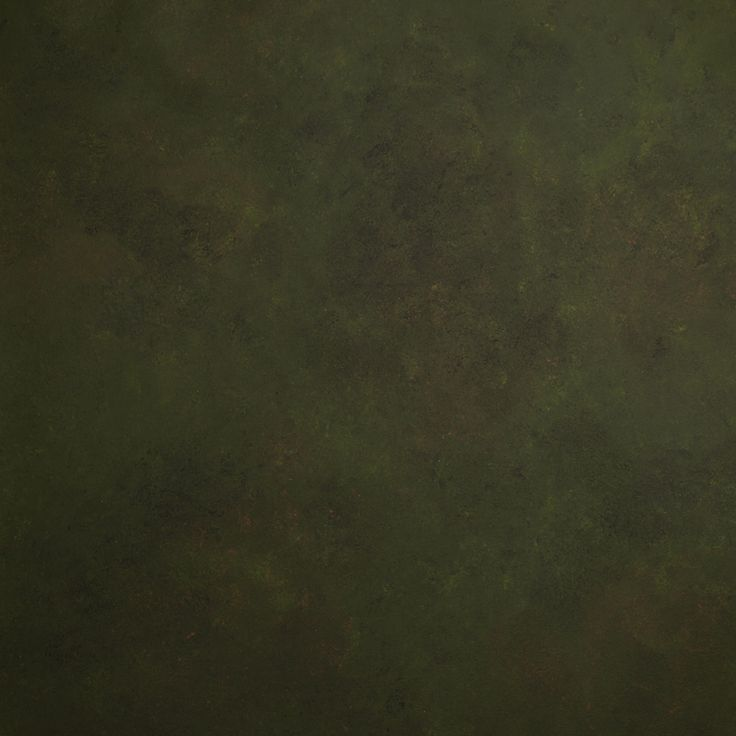

SOBRE MARSAL
INTRODUCCIÓN
MARSAL es una marca que se dedica a la fabricación y venta de bolsos veganos de alta gama hechos de: piel de serpiente, cocodrilo, cebra y leopardo. Todos nuestros productos están hechos a mano desde cero.
LOGO
Este diseño simple y elegante transmite los valores que la marca quiere reflejar.
COLORES
El color verde oscuro lo relacionamos con sentimientos profundos.

El color marrón para nuestra empresa representa la seriedad y la sencillez.
El color negro lo asociamos a la elegancia y al poder.
CONTACTO
611096592
marsal@gmail.com